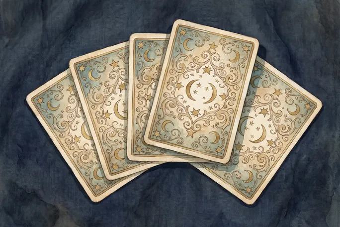

טארוט
קלף אחד ביום, כתמונה שמזמינה מחשבה
מה זה
חפיסת טארוט היא 78 קלפים מאוירים. 22 מהם, הארקנה הגדולה, מתארים שלבים גדולים במסע חיים. הקלף לא אומר מה יקרה, הוא מציע זווית התבוננות על מה שכבר קורה.
מאיפה זה מגיע
החפיסה הופיעה בצפון איטליה במאה ה-15, ובמשך מאתיים שנה שימשה רק כמשחק קלפים בשם טארוקי. השימוש בה לקריאה התחיל רק במאה ה-18 בצרפת, וזה חשוב לדעת.
מה זה קורא
קלף הלידה שלך מחושב מתאריך הלידה בחיבור פשוט של חודש, יום ושנה. בנוסף נשלף קלף יומי.
מה זה תורם לתחזית שלך
הקלף היומי הוא מה שנותן לתחזית את התמונה שלה. הוא גם הרכיב שהכי הרבה משתמשות שומרות ומשתפות, ולכן הוא מקבל את המקום המרכזי במסך.
מונחים
- ארקנה גדולה
- 22 הקלפים המרכזיים, מהשוטה ועד העולם
- ארקנה קטנה
- 56 הקלפים הנותרים, מחולקים לארבע סדרות
- קלף לידה
- קלף מהארקנה הגדולה שנגזר מתאריך הלידה ונשאר קבוע
- פריסה
- הסידור שבו נשלפים כמה קלפים יחד. אצלנו נשלף אחד בלבד
מה זה לא
אין בטארוט מנגנון סיבתי, וגם המסורת עצמה צעירה יחסית. הערך שלו הוא בתמונה שמעוררת מחשבה, ולא בניבוי.